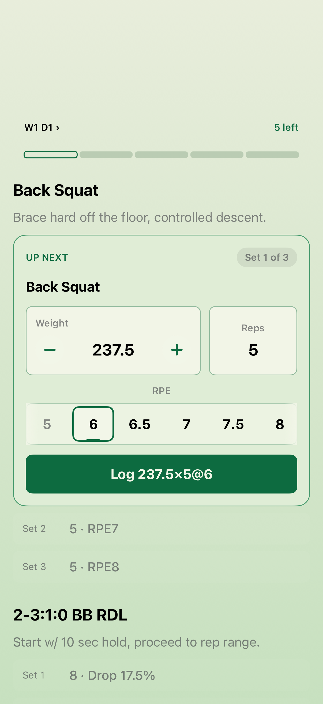
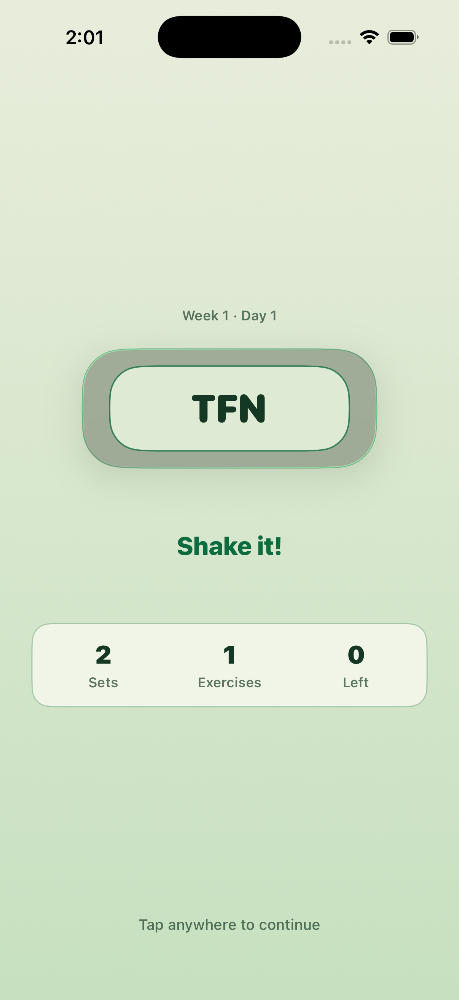
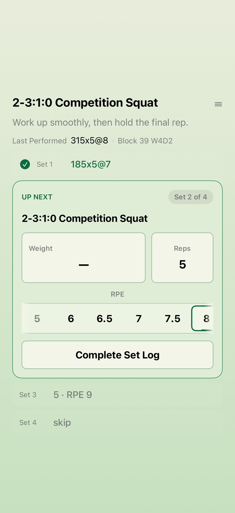
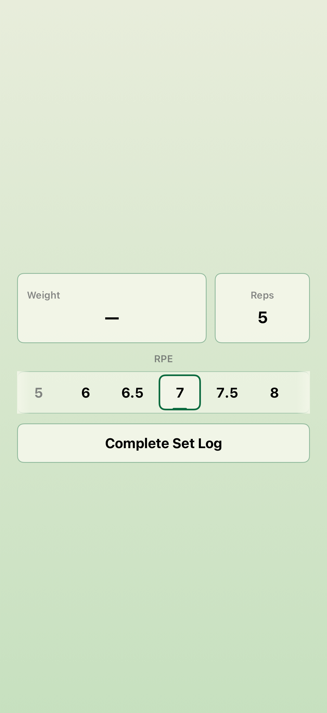
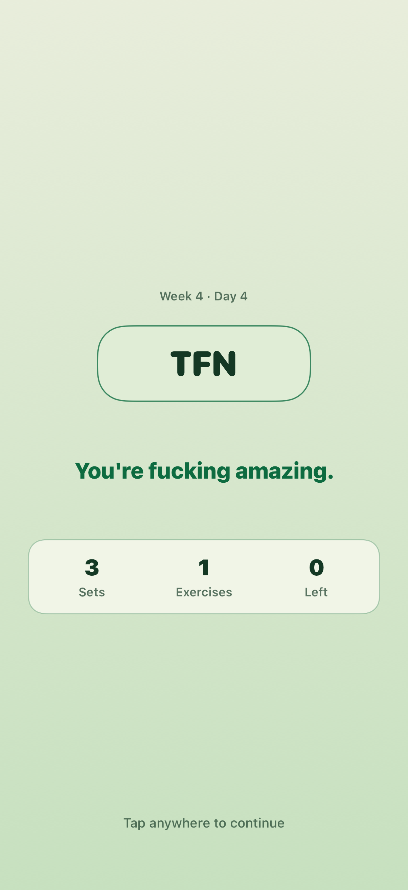
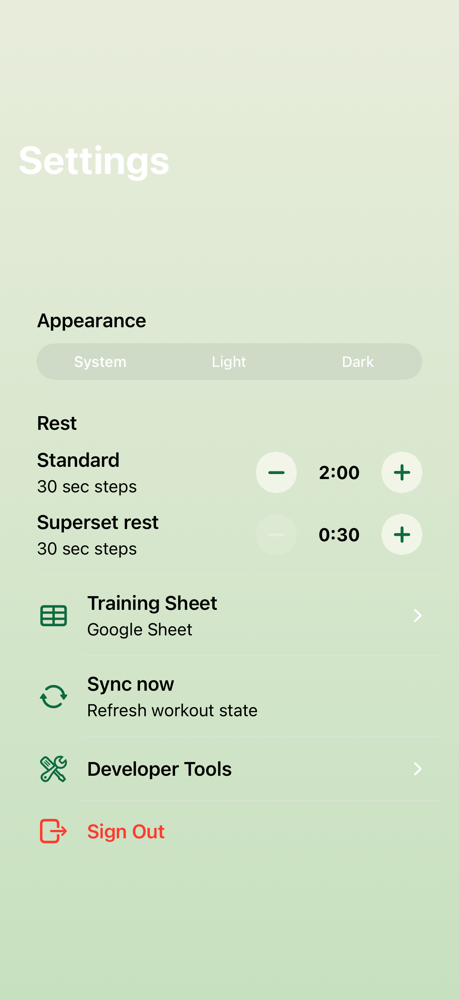
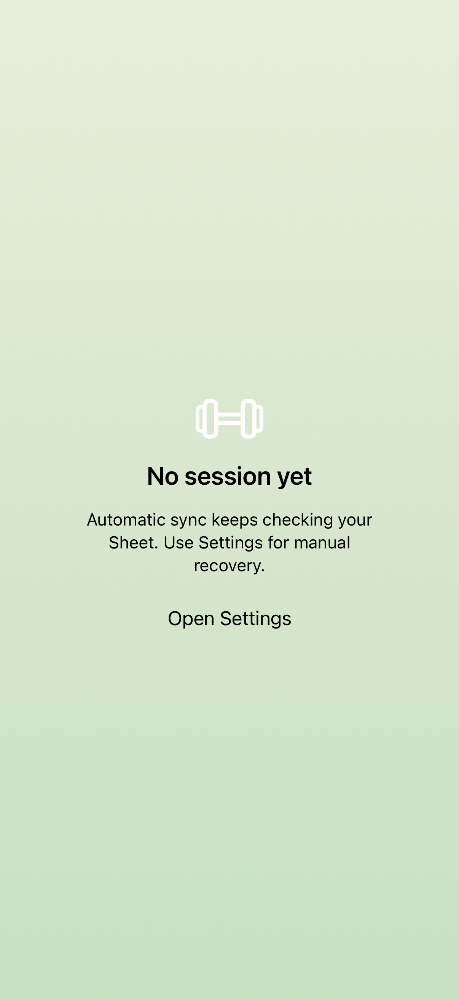

I only design.
The loop ships.
A powerlifting app built almost entirely by an autonomous Claude Code
harness. The human never writes the code — they write issues.
A standing loop called Ralph does the rest:
selects, implements, reviews, verifies, gates, merges.

Taste stays human.
Toil goes to the machine.
The whole system draws one hard line: the human owns judgment and design; the loop owns implementation and verification. Nothing crosses that line by accident.
Design
- Shapes features and sharpens the domain language
- Makes the subjective calls — what's good, what ships
- Writes specs & PRDs, then breaks them into issues
- Labels an issue
ready-for-agent— and walks away
Build
- Selects the next unblocked issue, no prompt needed
- Implements it test-first in an isolated worktree
- Reviews, UI-verifies, and runs the full gate
- Merges, pushes, and closes the issue — unattended
“GitHub issues replace the quickstart’s prd.md, and every iteration runs in a fresh agent context.” — the standing input is a backlog, not a chat thread.
From an idea to a grabbable issue
Design isn’t a doc dump — it’s a chain of Claude Code skills, each one producing a durable artifact the next step consumes.
Stress-tests the design against the existing domain model, sharpens terminology, and resolves each open decision branch by branch.
Product work with user stories becomes a PRD published straight to the tracker — the “why” and the acceptance criteria.
Technical work becomes an engineering spec — implementation-neutral, with
every contract tagged ADDED / CHANGED / REMOVED.
Slices the PRD or spec into tracer-bullet vertical slices — independently grabbable issues, each with its own acceptance criteria.
7 ADRs + 7 specs, written as the decisions crystallised
contract the loop is held to
One issue in. Ten stages.
A shippable merge out.
CONTEXT × every phase
no bloat Fresh context per phase
Implement, review and verify each run as a brand-new agent. Work never accumulates in one context window, so quality doesn’t decay over an issue.
isolation A worktree per issue
Each issue builds on its own throwaway branch agent/issue-N under .claude/worktrees/. 12 of them ran across the project.
correctness Gate the merged tree
The final gate doesn’t test the branch — it does a --no-ff merge into a temp worktree and tests the exact tree that will ship.
self-heal No infinite spin
A failure auto-relabels the issue to ready-for-human and moves on. Stop conditions: SELECTED_ISSUE=NONE, a max-iteration cap, and a 45-min per-phase timeout.
Four prompts. Four single-role agents.
Every stage is one file in ralph/prompts/.
Each frames Claude in exactly one role, bans everything off-task, and ends in a machine-checkable promise. Verbatim:
You are the issue selector for an autonomous "Ralph" remediation loop on an iOS app.
Your ONLY job this run is to choose exactly ONE GitHub issue to work next… Do NOT write code, create branches, or modify anything.
# priority: bugs → the dependency that unblocks the most work → lowest issue number
Output ONLY the final line:
SELECTED_ISSUE=<number> | SELECTED_ISSUE=NONE
You are an autonomous engineer implementing ONE GitHub issue… in the TDD implementation phase.
Must invoke the tdd skill.
Run non-UI verification before completion: swift test, xcodegen generate, Xcode unit/component tests, and swiftlint lint --quiet.
Stay inside this worktree… do not rewrite main's history, or change the loop's own scripts or prompts.
# emit one <observations> block · tags [doc-gap] [friction] [recurring?] · each ends "— cost:"
You are an autonomous engineer reviewing and remediating ONE GitHub issue… in a fresh Swift review phase.
Spawn the swift-reviewer custom agent as a separate subagent for fresh-eyes review. Do not self-review in this phase.
Repeat review / remediation until swift-reviewer reports no blocking findings.
# no agent grades its own homework
You are an autonomous engineer verifying ONE GitHub issue… in a fresh UI verification phase.
Run Xcode UI integration tests for WorkoutTrackerUITests.
# if Views/ or Theme.swift changed →
capture a screenshot, spawn the ui-screenshot-reviewer, and require its last line be exactly:
PASS: no blocking static visual findings.
COMPLETE promise line. Words like
done, completed, success
— or the old marker — don’t count, and fail the phase. Every prompt also has a BLOCKED
escape hatch for vague specs, unresolved dependencies, or an un-spawnable reviewer.
Nothing merges until the
whole ladder is green
It tests what actually ships.
The gate runs on a separate integration worktree holding the exact merged result — not the feature branch in isolation.
git merge --no-ff --no-commit agent/issue-N
run-gate # ☑ all six rungs
git commit # merge: resolve #N via Ralph
git push · gh issue close
The loop also refuses to start if the working tree is dirty, and by default runs
with permission checks bypassed for unattended operation — with --no-push as the trust-building safety valve.
It screenshots its own work
and grades the pixels

ralph/.artifacts/iter-8-issue-143.png — captured by the loop
When a View or Theme.swift actually changes, snapshot.sh boots the app
on deterministic fixtures and captures a screenshot — 76 of them across the project.
A separate ui-screenshot-reviewer agent inspects the frame against the issue
contract. The phase only completes if the saved artifact’s last line is, exactly:
12 glass-bearing views are pinned as visual-regression baselines, rendered at exact 1.0 precision — proof that even iOS 26 Liquid Glass effects render deterministically, and a hard gate against silent visual drift.
A real, polished product
A Liquid Glass powerlifting client over a coach-managed Google Sheet. Every screen below was implemented, reviewed and visually gated by the loop.





… and more — the progress header, pull-to-reveal settings gesture and morphing onboarding, all gated the same way.
The receipts
Every figure pulled straight from git,
gh and the filesystem — no estimates.
This slide was built the same way
No template, no hand-assembly. This presentation was produced in essentially
one shot with Claude Code’s ultracode
dynamic Workflows — the same fan-out-then-verify pattern the app is built on.
One dynamic Workflow spawned 5 parallel agents — loop mechanics, verbatim prompts, the skills flow, hard metrics, and screenshot triage — each returning structured, cited evidence straight from the repo.
A single design pass turned that evidence into the deck — copy, the dark
engine-room system, the animated loop, and the device frames — built as plain
HTML · CSS · JS.
Rendered with headless Chrome and inspected section-by-section before shipping — then opened a PR. The deck verifies itself, just like the loop screenshots its own work.
Issues, not prompts.
Gates, not trust.
A design-only human and an autonomous-but-gated loop, meeting at a backlog.
The standing input is a backlog. A human labels issues once; the loop drives select → implement → review → verify → gate → merge with zero per-step prompting.
Fresh context per phase. Every mutating stage is a new agent, so quality never decays inside a bloated window — and phases hand off only via an exact promise line.
No agent grades its own homework. Implement can’t review; review must spawn a separate reviewer; UI verification spawns a separate screenshot critic.
Autonomy is earned with gates. A real CI ladder plus a pixel-level visual PASS runs on the exact merged tree before anything ships — and failures self-heal back to a human.